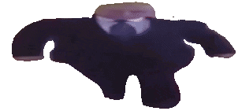
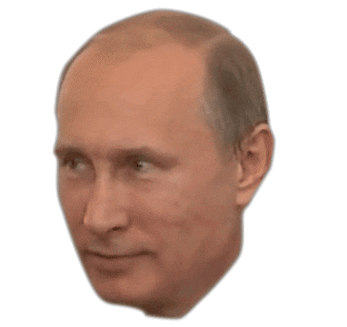

Who is wide putin?
Wide Putin Walking, also known as IT'S HIM,
is a viral video of Russian President Vladimir Putin walking down a hallway,
streched and set to Piano Fantasia's “Song For Denise”(Maxi version).
The video is often paired with a caption or used to fill blank space in exploitables.
It first appeared online in early February 2020,
mostly spreading on YouTube and Discord in May 2020.
When did he first spawn?
The footage used comes from Vladimir Putin's fourth term inauguration,
which was streamed by RT on May 7th, 2018.
The oldest recorded instance of Putin Walking edits was uploaded on Telegram
to the channel "Ручка" on February 2nd, 2020, by the user ToThePan.
Another stretched version was uploaded on May 27th, 2020 by YouTube user FlobySop64.
The video, titled, “Wide Putin Walking,” has since received over 25,000 views, 1,900 likes and 197 comments.
Soon after the distorted version was uploaded to Youtube, the IT'S HIM Discord server was created by user i5kilo to spread the meme to other communities.
Wide Putin Walk was shared to various Discord servers and the caption "IT'S HIM" was popularized.
Enough of Putin. What's your name?
You really thought you could get away from wide putin?

